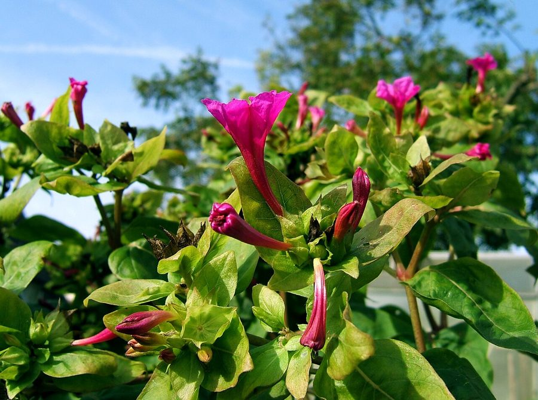

गुलाबाँसFour O'Clock
Mirabilis jalapa · Nyctaginaceae · FLR-0309

- Scientific name वैज्ञानिक नाम
- Mirabilis jalapa L.
- Family कुल
- Nyctaginaceae
- Hindi हिंदी
- गुलाबाँस
- Local names स्थानीय नाम
- gulabbas, gulbans, gul abbas, four oclock
- Status here यहाँ की स्थिति
- naturalized
- Movement आवागमन
- Resident, here all year
- Known from कहाँ दर्ज
- Others have published records from the wider Awadh–Purvanchal plain, none yet from Basti–Ayodhya अवध–पूर्वांचल से दूसरों के प्रकाशित अभिलेख, बस्ती–अयोध्या से अभी नहीं
- IUCN IUCN
- not evaluated
- Review समीक्षा
- audited and independently read
When to look कब देखें
Present all year. साल भर मौजूद।
Uses and possibilities उपयोग और संभावनाएँ
“Traditional medicine” means a documented traditional use, not a claim that it works. Nothing on this page is medical advice.
Drawn from the documented uses in the profile below, where each is labelled traditional, current or a research lead. All uses →
गुलाबाँस / Four O'Clock
Mirabilis jalapa L. — Nyctaginaceae
गुलाबाँस — बागों से निकलकर खेतों की पड़ती में, सड़कों के किनारे, और गाँव के खँडहरों में उगने वाली बेलचेहरी झाड़ी। फूल रात को खिलते हैं, दिन में बंद हो जाते हैं, इसीलिए इसे "चार बजे का फूल" कहते हैं। फूल गुलाबी, पीले, या सफ़ेद, कभी एक ही पेड़ पर अलग-अलग रंग। पूरा पौधा जहरीला है। बीजों को खोल निकालने से काली रंग की पाउडर मिलती है, जिसे कभी खाने में रंग के लिए डाला जाता था, पर यह जहरीली है।
Quick Identification त्वरित पहचान
| Feature | Description |
|---|---|
| Size | Herbaceous shrub 0.5–1.5 m tall, much-branched from base |
| Leaves | Ovate, 5–12 cm long, dark green, entire, opposite, soft, with long petioles |
| Flowers | Funnel-shaped, 2–4 cm long, opening in late afternoon/evening (hence the name), in clusters of 2–5; colours include pink, red, yellow, white, and bicoloured; highly fragrant at night |
| Fruit | Hard, black, rounded, 0.8–1 cm diameter, containing a single seed with a white resinous coating |
| Roots | Thickened tubers, white or pink inside |
| The test | Flowers opening in the evening and closing the next morning; funnel-shaped; often bicoloured; dark black fruit |
Field tip: Four O'Clock is common in wastelands and garden margins in eastern UP. The plant is recognizable by its ovate leaves, funnel-shaped flowers that open in the late afternoon, and the hard, black, rounded fruits. Flowers are fragrant at night. The entire plant is toxic.
हिंदी — कैसे पहचानें: फूल शाम को खिलते हैं, सुबह बंद हो जाते हैं। गुलाबी, पीले, सफ़ेद। काली, गोल फली। पत्तियाँ नरम, अंडे जैसी।
Morphology आकारिकी
Biometrics (plants in disturbed sites):
| Measurement | Range |
|---|---|
| Height | 0.5–1.5 m |
| Leaf length | 5–12 cm |
| Leaf width | 3–8 cm |
| Flower length | 2–4 cm |
| Fruit diameter | 0.8–1 cm |
Root system: Thickened, tuberous roots, white or pale pink internally; nitrogen-fixing nodules sometimes present.
Stem and branches: Herbaceous, much-branched from the base, green, becoming woody at base with age. Nodes are swollen.
Leaves: Opposite, ovate to ovate-lanceolate, 5–12 cm long, 3–8 cm wide, dark green, entire, soft, with long petioles. Leaves are succulent when young.
Flowers: Funnel-shaped to tubular, 2–4 cm long, opening in late afternoon/evening (hence "Four O'Clock"), closing the next morning. Colours vary widely: pink, red, yellow, white, or combinations (bicoloured flowers on the same plant). Five-parted calyx (no true petals). Borne in small clusters of 2–5 at branch tips. Highly fragrant at night.
Fruit: Hard, dark, rounded, wrinkled perianth enclosing the seed; black when ripe, 0.8–1 cm diameter.
Toxins: All parts contain toxic compounds, particularly the roots and seeds. The black powder inside the fruit is highly toxic.
हिंदी: जड़ें गाढ़ी, सफ़ेद। पत्तियाँ नरम, अंडे जैसी, सामने-सामने। फूल शाम को खिलते हैं। काली, कठोर फली। सब जहरीला।
Behaviour & Ecology व्यवहार और पारिस्थितिकी
Four O'Clock is a tropical and subtropical plant, native to tropical America, now naturalized in warm regions worldwide. In eastern UP it escapes from gardens and establishes in wastelands, disturbed areas, and field margins. The plant is robust and drought-tolerant once established. It flowers profusely during the warm season. The fragrant flowers are visited by moths and other night-flying insects. The plant produces copious seeds, which are dispersed by animals and water. It is becoming semi-weedy in some areas but is not yet aggressively invasive.
हिंदी: अमेरिका का पौधा, अब हर जगह। पड़ती में, खँडहरों में अपने आप उगता है। सूखा सहन कर लेता है। बहुत बीज देता है।
Life Cycle / Phenology जीवन चक्र
| Month / season | Event |
|---|---|
| March–May | Vegetative growth from surviving tubers or seeds |
| June–July | Monsoon growth; rapid development |
| July–September | Main flowering period in eastern UP |
| September–October | Seed production and ripening |
| October–November | Seed dispersal; plant senescence in cold season |
| December–February | Dormancy; tubers survive underground in frost-free zones |
The plant is a tender perennial, persisting as tubers in warm climates.
हिंदी: गर्मी में जड़ों से निकलता है। बरसात में खूब बढ़ता है। जुलाई-सितंबर में फूल-फली। ठंड में सो जाता है।
Associated Species / Interactions संबंधित प्रजातियाँ
- Pollinators: Moths and night-flying insects visit the fragrant flowers.
- Seed dispersal: Animals (cattle, goats) accidentally transport seeds; water dispersal in flooded fields.
Pests and Diseases कीट और रोग
- Leaf-eating beetles and caterpillars; rarely serious.
- Powdery mildew in humid weather.
- No significant fungal pathogens in eastern UP.
Agricultural / Human Relevance कृषि प्रासंगिकता
Toxicity (documented):
The entire plant is toxic. All parts contain potent toxins, particularly:
- Roots and tubers: Contain trigonelline and other alkaloids.
- Seeds: Black powder is highly toxic; contains carcinogenic compounds.
- Leaves and stems: Mildly toxic; cause skin irritation or gastrointestinal distress if ingested.
Ingestion of the black seed powder (which was historically used as food coloring) causes severe poisoning. No part of the plant is safe to eat.
Historical use (not recommended): The black seed powder was once used as a food colorant in some cultures, but this practice is now known to be dangerous and has been abandoned. The plant is sometimes used in traditional medicine, but its toxicity limits safe use.
Today. Four O'Clock is grown occasionally as an ornamental for its beautiful, fragrant flowers. However, it has naturalized in many regions and is becoming weedy. It is not cultivated commercially but occurs as a garden escape.
Research direction (a lead, not a result). Monitoring of Four O'Clock as a naturalized plant in eastern UP would help assess its invasion potential and ecological impacts.
हिंदी: पूरा पौधा ज़हरीला है। खासकर बीज की काली पाउडर। खाया कभी नहीं जाता। सजावट के लिए कभी लगाया जाता है, पर अब अपने आप उगता है।
Expected Locally स्थानीय रूप से अपेक्षित
Not a field record. Written from published accounts for eastern Uttar Pradesh. No confirmed local sighting yet — if you have seen it, that is what the atlas needs.
अभी तक स्थानीय पुष्टि नहीं। यह विवरण प्रकाशित स्रोतों से है, किसी अवलोकन से नहीं।
GBIF holds published records from the wider Awadh–Purvanchal plain. Four O'Clock is to be expected in disturbed areas, wastelands, field margins, and abandoned gardens throughout Basti and Ayodhya districts. It is naturalized but not yet invasive.
Distribution वितरण
Global range: Native to tropical America; naturalized worldwide in warm regions.
In India: Widely naturalized in disturbed areas and gardens.
In Uttar Pradesh: Naturalized in gardens, wastelands, and disturbed sites.
In Basti district / eastern UP: Occasional in wastelands and field margins; naturalized in some areas.
Research Questions शोध प्रश्न
- Where is Four O'Clock found in your village, and how common is it? — Walk and map locations; note habitat (garden, wasteland, etc.).
- What time do the flowers open in the evening, and close in the morning? — Observe flowers over a 24-hour period.
- Which insects visit the flowers at night? — Watch and photograph night-visiting insects.
- How are the seeds dispersed — by animals, water, or human activity? — Observe seed production and dispersal.
- Is the plant spreading into cultivated fields, and is it considered a weed by farmers? — Ask farmers about its impact.
Similar Species मिलती-जुलती प्रजातियाँ
| Species | How to tell apart | हिंदी |
|---|---|---|
| bougainvillea | Leaves are smaller; bright coloured bracts (not flowers); thorny stems | बूगेनविलिया — कांटेदार; रंगीन पत्तियाँ |
| Petunia | Flowers are more trumpet-shaped; open during daytime; different growth form | पेटूनिया — दिन में खिलता है |
| Morning Glory | Climber; flowers open in the morning; different structure | सवेरे का फूल — बेल; सुबह खिलता है |
Field rule: A bushy herb with ovate, opposite, soft leaves and funnel-shaped flowers that open in the late afternoon and close the next morning, with hard black seeds, is Four O'Clock.
Taxonomy & Classification वर्गीकरण
Original description. Described by Carl Linnaeus in Species Plantarum (1753). The species epithet jalapa refers to Xalapa, Mexico, where the plant was first discovered by Europeans.
Subspecies. Monotypic — no subspecies are currently recognised.
Family and order placement. Nyctaginaceae (four o'clock family), order Caryophyllales. Mirabilis includes about 50 species, mostly from tropical America.
Phylogenetic notes. Mirabilis jalapa is closely related to other ornamental Mirabilis species.
IUCN status rationale. Not evaluated. Widely naturalized; invasion potential varies by region.
Photo Gallery फोटो गैलरी
Photos needed आवश्यक फोटो
- [ ] Whole plant in flower
- [ ] Close-up of funnel-shaped flowers (afternoon/evening)
- [ ] Bicoloured flowers if present
- [ ] Hard, black, rounded fruits
- [ ] Night-visiting insects
No photos yet — add field photos to media/species/four_oclock/ and run node scripts/sync_photos.js.
References संदर्भ
- Linnaeus, C. (1753). Species Plantarum, vol. 1, p. 437. [original description]
- Hooker, J.D. (1885). The Flora of British India, vol. 4. L. Reeve, London.
- Kirtikar, K.R. & Basu, B.D. (1935). Indian Medicinal Plants, 2nd ed., vol. 1. Lalit Mohan Basu, Allahabad.
- Chopra, R.N., Nayar, S.L. & Chopra, I.C. (1956). Glossary of Indian Medicinal Plants. CSIR, New Delhi.
- Duthie, J.F. (1903). Flora of the Upper Gangetic Plain. Government Printing, Calcutta.
- GBIF Occurrence Data — Mirabilis jalapa, India (2026).
Source file: species/flora/weeds/four_oclock.md